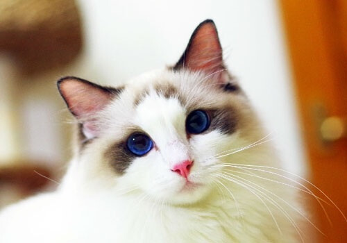
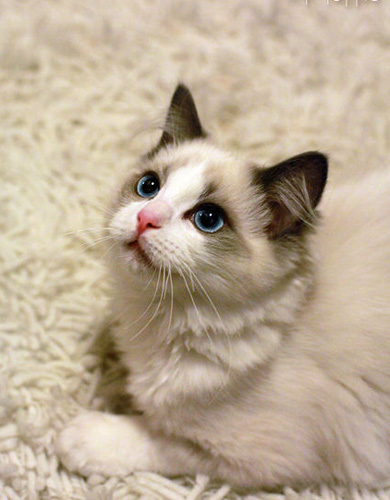
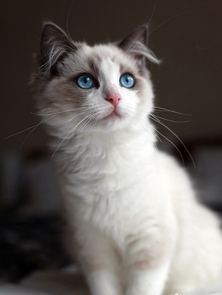

布偶猫是猫中较大、较重的一种。它的头呈V形，眼大而圆，被毛丰厚，四肢粗大，尾长，身体柔软，多为三色或双色猫布偶猫全身非常松弛，像软绵绵的布偶一样。它性格温顺、恬静，对人非常友善，对疼痛的忍受性相当强，常被误认为缺乏疼痛感。
布偶猫是一个非常聪明的品种，它性情温顺、安详，爱交际，和其他猫或狗相处友好，叫声轻柔，感情丰富，有爱心，喜欢有人陪伴，对人非常友善，全身特别松弛、柔软，忍耐性强，非常能容忍人们的玩弄。

全名：布偶猫 寿命：10-15年 毛长：长毛
别名：布娃娃 身高：约50厘米 原产地：美国
价格：3000-10000 黏人排名：第1名 体型：大型



布偶猫又叫布拉多尔猫、布娃娃猫、玩偶猫，拉丁学名为Ragdoll。虽然布偶猫的体型和体重在整个猫类中都是最大，但它们确是十足的温柔大块头。它们对人类非常友善，即便面对孩子们的打闹也能大度包容，因此布偶猫受到许多家庭的青睐。
布偶猫的原产地是美国，由家住加州的一名叫Ann Baker的妇女在上世纪60年代所培育，1965年在美国获得认可，然后逐渐进入其他国家。布偶猫进入中国较晚，至今不过10年时间，但布偶猫却在很短时间内就在中国流行开来，这与它们出众的外貌和极佳的性格密不可分。
如果你喜欢粘人的猫咪，那么布偶猫绝对是一个不错的选择。它们很喜欢待在主人身边，如果你有事在忙，它们也不会吵到你，因为布偶猫的叫声很轻柔，而且大部分情况下，它们都会保持安静。与此同时，布偶猫除了对主人很友善外，它们对陌生人、小孩子和其他动物都非常友好，因此，主人不必担心布偶猫是否会伤害到家作客的客人或其他动物等。
此外，布偶猫的城市适应能力极强，它们既可以忍受炎炎夏日，也能安然度过数九寒冬。由于布偶猫身上没有体味、不会流口水，所以它们也不会给主人的日常生活带来多少烦恼。而且布偶猫的可训练性也较强，只要主人能够适当引导，它们就会按照指令做出相应的反应。
不过布偶猫的毛发较长，因此需要主人经常给猫咪梳理毛发，这样不仅可以缓解家中猫毛乱飞的情况，还能让猫咪的毛发更健康！
在布偶猫还没有被广受推崇时，大家把大头圆脸作为判断猫咪是否可爱的标准，不过随着布偶猫的横空出世，这一标准随即被打破。布偶猫的头大但不呈圆形，而为楔形，两耳之间的头顶部扁平。有些人会说在照片上看布偶猫完全没觉得它们的脸是楔形的，那可能是因为布偶猫的毛发较长，再加上拍摄角度的问题所以导致视觉上的错觉。
布偶猫属于大体型长毛猫，它们的毛发柔软顺滑不易打结，它们身体的毛发生长状况呈以下特点：面部毛发较短、颈部毛发较长、后肢毛发较前肢长。毛发颜色包括海豹色、蓝色、巧克力色和丁香色、红色、奶油色。
布偶猫的耳朵中等大小，耳尖较圆并向前倾;明亮的蓝色双眼似乎能直达你的心灵，如果仔细观察，你会发现布偶猫的眼睛是微微上扬的，是猫眼中的“丹凤眼”;有些布偶猫的鼻子上略有凹陷;下巴则跟上唇和鼻子为一直线。布偶猫身形长、肌肉发达，前肢比后肢短;脚部相对身体比例来说较大，而且为圆形;尾巴毛发蓬松。